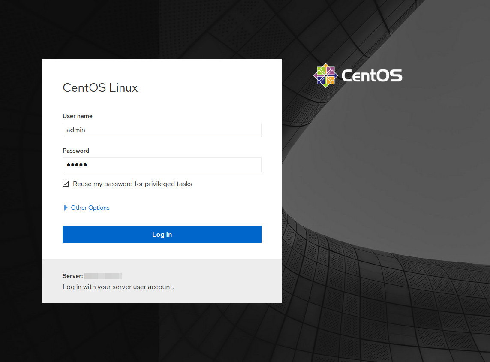

Installing CentOS 8 on HPE Gen10 Systems
This guide provides notes on installing and configuring CentOS 8 on an HPE Proliant DL20 Gen10 1U rackmount server. The configuration is intended for a lightweight KVM-based virtualization hypervisor with a web-based admin interface.
Note, this guide--and all related files--can be downloaded from the link provided in the downloads section. This guide is actively maintained and may be revised, check https://kzoo.tech/hpecentos for the most recent version.
Hardware Configuration
The Proliant DL20 Gen10 may be equipped with various OEM option parts which is supported by HPE. Third-party hardware is not well-supported by HPE and may cause issues with thermal sensor readings.
The following hardware is configured on this system:
- Processor: Intel Xeon E-2224 @ 3.40GHz
- Memory: 2x 8GB DDR4 2666MHz ECC
- Storage: 1TB Samsung EVO 870 SSD
- Option Parts: HPE Dedicated iLO Port/M.2 NVMe SSD/COM Port Upgrade Kit
Note that third-party M.2 SSD drives may cause high system fan speeds and will operate significantly louder than normal at idle. This is caused by a missing temperature reading from the third-party drive. An official HPE advisory recommends using only OEM-suplied M.2 SSD drives.
BIOS/Platform Configuration
The BIOS/Platform Configuration can be accessed either through a keyboard, mouse and monitor; or though the iLO5 Remote Console web interface. Further information about configuring the system can be found in the UEFI Utilities user guide.
SATA Controller Options
The HPE Smart Array S100i SR Gen10 software RAID controller is not supported by
CentOS 8. The Embedded SATA Configuration should be set to SATA ACHI Support.

System Installation
The provided hpecentos.cfg.example configuration file should be modified for the target system and then used to perform an automated installation using Kickstart. The following is an example boot option for fetching the kickstart file from web server.
setparams 'Install CentOS Linux 8'
linuxefi /images/pxeboot/vmlinuz inst.stage2=hd:LABEL=CentOS-8-2 x86_64-dvd \
quiet inst.ip=eno1:dhcp inst.ks=https://abc.xyz/hpecentos.cfg
initrdefi /images/pxeboot/initrd.img
Manual installation is also possible, however the iLO Remote Console is only compatible with text mode. Consider using a monitor or direct VNC for manual installations.
Note that using the iLO5 Virtual Media operates very slowly and may only work with text mode installation. Using USB boot media is recommended.
The hpecentos.cfg.example kickstart file provided is designed for the specific hardware configuration listed above and should be modified as needed. The sections below describe parts of the file. More information can be found in the Kickstart Commands and Options Reference documentation.
Localization
The keyboard layout, default language, timezone and hostname should be adjusted for each installation's needs.
Accounts
A local default admin account, which is part of the wheel group is created.
This is the account that can be used to login to the Cockpit
web-interface after installation.
The default root and admin passwords should be changed prior to
installation.
Partitioning
A reserve of 10% of the nominal drive capacity is left unallocated. A 256MB
/boot/efi and a 1GB /boot partition are created to faciliate UEFI booting.
An additional 16GB partition is reserved for swap.
The remaining 900GB is used for an LVM Volume Group. Within this volume group, the following paritions are allocated:
/25GB (ext4)/tmp25GB (ext4)/home50GB (ext4)/var750GB (ext4)
Note that, a large /var,/var/lib, or /var/lib/libvirt is necessary to
accommodate the storage of VM images on the system. Approximately 50GB of the
volume group is left unallocated for future use.
Networking
The installation process assumes that a DHCP network connection with access to
the internet is avaiable on eno1 during installation.
Packages
The following packages should be marked for installation:
@^virtualization-host-environment,kexec-tools,cockpit,cockpit-machines,cockpit-storaged, andamsd.
The amsd package is available from
HPE Management Component Pack repository. This package provides
out-of-band communication of server health information to the iLO5 Agentless
Management Service (AMS). According to an
HPE Customer Advisory, this package is required on CentOS to
provide correct temperature data to the AMS, which controls system fan speeds.
System Configuration
After the system installation and first-time boot initalization have completed,
the web-interface can be accessed from the address https://w.x.y.z:9090/. To
login use the username admin and the configured password.

More information about the web-interface can be found on the Cockpit Project's website.
Virtual Machines
Virtual machines can be created and imported in the web-interface by selecting
Virtual Machines and following the user interface.

More information about virtual machines can be found in the documentation for RHEL 8.
Automatic Updates
Automatic updates can be enabled in the web-interface by selecting Software
Updates and turning on Automatic updates.

Automatic updates requires installation of the dnf-automatic package. Enabling
automatic updates will prompt to install this package.
Errata
Corrections and updates should be sent to contact@kzoo.tech. Provide as many details as possible when reporting corrections and updates.
Before submitting a correction be sure you are using the latest version of this guide at https://kzoo.tech/hpecentos.
Download
History
1.0.0 - Initial revision. (02-Nov-2020)
Copyright
Copyright (c) 2020, Andrew Alm <contact@kzoo.tech>.
This work is licensed under a Creative Commons Attribution-ShareAlike 4.0 International License.